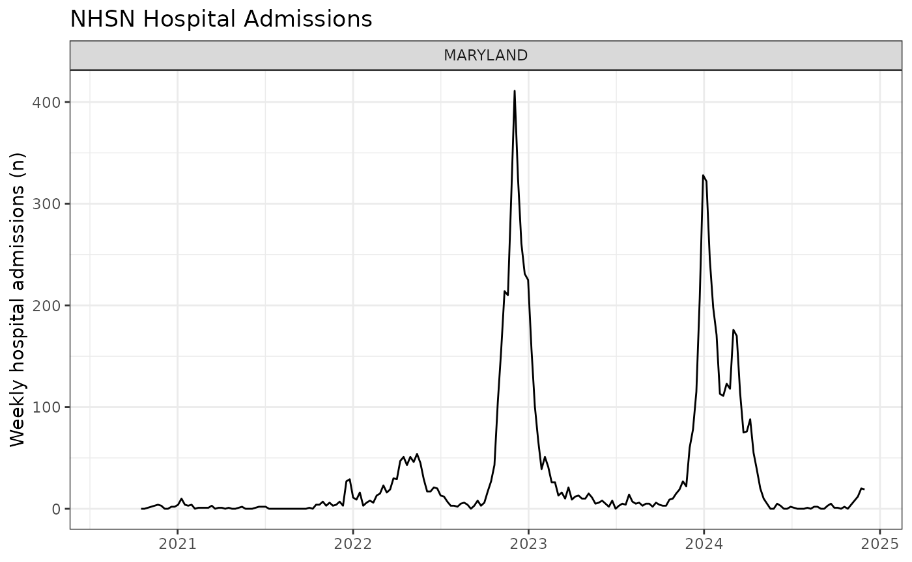

AMPH 2025: Pull NHSN Hospitalization Data for Forecasting
Source:vignettes/collect_empirical_data.Rmd
collect_empirical_data.RmdSet parameters
state_name <- "Maryland"
geo_ids <- "md"
forecast_disease <- "influenza"
forecast_date = "2024-11-30" #"2025-10-12"Save and check API key
Go to https://api.delphi.cmu.edu/epidata/admin/registration_form and register for a psuedo-anonymous account.
Run the command below to save your API key in your
.Renvironfile. As it says in the prompt, add a lineDELPHI_EPIDATA_KEY=yourkeyhereto your.Renvironfile. Save and close the file, then restart R or RStudio. After restarting, run the commandepidatr::get_api_key()to check that your API key is saved.
# Follow instructions about opening `.Renviron` file
epidatr::save_api_key()
# Check that the API key is saved
epidatr::get_api_key()Pull NHSN hospitalization data
target_data <- get_nhsn_data(
disease = forecast_disease, #"influenza" or "rsv" or "covid"
geo_values = geo_ids,
forecast_date = forecast_date,
save_data = TRUE
)## Important: forecast_date is more than 1 week ago. Pulling data issued prior to forecast_date.## Pulling data issued on or before 2024-11-30## Warning: No API key found. You will be limited to non-complex queries and encounter rate
## limits if you proceed.
## ℹ See `?save_api_key()` for details on obtaining and setting API keys.
## This warning is displayed once every 8 hours.Or pull directly with epidatr
Note: To pull data directly that pertains to a previous forecast
date, you need to filter by issue date. The code below is not set up to
do that, so it will pull the most recent data. To pull data as of a
previous forecast date, use the get_nhsn_data() function
above.
# Map disease names to NHSN signal names
# Based on epidatr NHSN signals for respiratory diseases
signal_map <- list(
"influenza" = "confirmed_admissions_flu_ew",
"covid" = "confirmed_admissions_covid_ew",
"rsv" = "confirmed_admissions_rsv_ew"
)
signal <- signal_map[[forecast_disease]]
# Call epidatr to get the data
target_data <- epidatr::pub_covidcast(
source = "nhsn",
signals = signal,
geo_type = "state",
time_type = "week",
geo_values = tolower(geo_ids)
)
target_data <- target_data %>%
dplyr::filter(time_value >= lubridate::as_date("2020-09-01"),
time_value < lubridate::as_date(forecast_date)) %>%
dplyr::mutate(disease = forecast_disease, signal = signal) %>%
dplyr::select(geo_value, source, disease, signal, issue_date = issue, time_value, value)Check the data
ggplot(target_data, aes(x = time_value, y = value)) +
geom_line() +
facet_wrap(~toupper(geo_value), scales = "free_y") +
labs(title = paste("NHSN Hospital Admissions"),
x = NULL,
y = "Weekly hospital admissions (n)",
alt = "Line plot of weekly hospital admissions over time") +
theme_bw()## Warning: Removed 10 rows containing missing values or values outside the scale range
## (`geom_line()`).